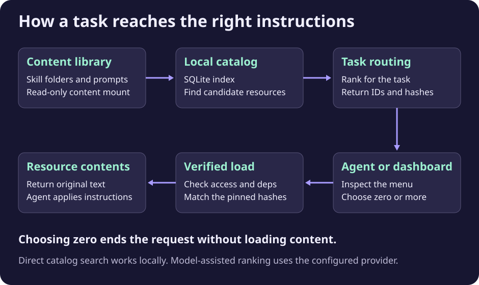

Monitor the catalog, source health and recent routing activity.
Skill Hub architecture
The Hub proposes resources from the catalog. Agents choose what to use. The Hub checks permissions, dependencies and hashes before returning content.

Quick router test
Describe a task to prepare a test in Router Studio.
Example tasks
Data source health
Observed: —Daily events by source
Native vs DockerRecent routing activity
Latest 20 events| Time | Source | Stage | Result |
|---|---|---|---|
| Loading data… | |||
Search and filter skills, inspect SKILL.md and manage revisions.
| Skill name | Domain | Version hash | Status | Actions |
|---|---|---|---|---|
| Loading skills… | ||||
Explore the relationships recorded for catalog resources and integrations.
Loading capability graph…
Alias → canonical resource
Agent → installed skill
Other recorded relationship
Test routing and inspect the recorded results.
Router Studio
Run with Ctrl/⌘ + Enter
Additional context (optional)
Leave unknown fields blank. For lists, enter one item per line. Only claim tools and resources you have.
Routing sends the task to the configured model provider and may incur charges.
Retrieval and coverage
—
Semantic
—
—
—
Keyword (FTS)
—
—
—
Graph (aliases)
—
—
—
Temporal
—
—
—
Hub menu
Loaded resources
—
Scored candidates
Shown in descending score order| Rank | Resource name | Type | Score | Status | Actions |
|---|---|---|---|---|---|
| No candidates have been scored. | |||||
Semantic search results
Direct retrieval without model scoring| Rank | Resource ID | Type | Similarity | Evidence and metadata | Actions |
|---|---|---|---|---|---|
| No semantic results yet. | |||||
Lưu ý về tính trung thực của dữ liệu: Bộ sản xuất telemetry (producer) hiện tại không ghi nhận confidence/candidates... Chi tiết ▾
Bộ sản xuất telemetry (producer) hiện tại không ghi nhận các trường
confidence, candidates, hoặc should_use_skill; những giá trị này được giữ ở trạng thái Chưa ghi nhận (Unknown) thay vì tạo số liệu giả. Bằng chứng kiểm định (attestation) là tự báo cáo từ engine.
| Mã Lượt (Route ID) | Thời gian | Nguồn | Kích hoạt (Trigger) | Kết quả (Outcome) | Thời gian xử lý | Bao phủ (Coverage) | Chi phí | Hành động |
|---|---|---|---|---|---|---|---|---|
| Đang tải lịch sử điều hướng... | ||||||||
View registered agents, their roles, models, skill permissions and available MCP tools.
Agent registry
Loading…| Agent ID / name | Role and assignment | Model | Runtime | Assigned skills | Available MCP tools | Source / permission |
|---|---|---|---|---|---|---|
| Loading agents… | ||||||
Native registry adapter unavailable
Details ▾
The backend needs a native registry adapter to report agent data. The agent count is currently unknown.
Agent changes (agent.edit) are currently unsupported under the host policy.
Agent data and host policy
Host policyThe native adapter can report these fields from the runtime registry:
| Field | Description | Expected source | Permissions and boundaries |
|---|---|---|---|
agent_id / name |
Unique agent identifier and display name | OpenBot Agent Profile | Read from the native profile |
role / description |
Specialization, role and assignment scope | AGENTS.md / Profile JSON | Follow assignment boundaries |
model_selection |
Assigned model and inference settings | Host configuration | Model changes require authorization |
skills_granted |
Hub skills available to load | Skill Index Bindings | Checked against security policy |
mcp_access |
MCP tools the agent may call | Runtime Tool Policy | Enforce runtime tool permissions |
runtime_status |
Observed runtime status (working, waiting or stopped) | Host Process Projections | Projection database writes are disabled |
View the MCP catalog, advertised tools and connection status.
Loading MCP servers…
Browse versioned prompts, templates, operating guides and shared documents.
| Prompt name | Domain | Version hash | Status | Actions |
|---|---|---|---|---|
| Loading prompts… | ||||
Inspect normalized execution events by runtime source.
| Time (UTC) | Source | Stage | Related IDs | Properties and evidence |
|---|---|---|---|---|
| Loading telemetry… | ||||
Review catalog provenance and check retrieval against the available evidence.
Source verification
Loading records…
Quarantined data
Receipts are tied to catalog versions. Entries await activation.
Review queue
“Ready to review” means the source can be inspected. Activation requires approval.
| Resource | Source status | Details |
|---|---|---|
| Loading… | ||
Exact body duplicates
Scanning…Catalog skills grouped by the SHA-256 hash of their body. Empty bodies are counted separately.
| SHA-256 hash | Duplicate count | Finding type | Inspect group members |
|---|---|---|---|
| Loading duplicates… | |||
0 empty bodies
Empty or unextracted bodies
Counted separately
Resources with the SHA-256 hash of an empty body (e3b0c442...) are quarantined or unresolved references with no extracted body. These entries are counted separately.
Sample quarantined entries with empty bodies:
Security checks and benchmarks
Independent and historical
1. Static security scan
Running rules…
Scan skill and prompt bodies for empty content, executable patterns and [REDACTED] markers. Review source and frontmatter separately.
Showing 0 of 0 results
| Resource | Type / hash | Rule and evidence (secrets redacted) | Classification and remediation |
|---|---|---|---|
| No scan results yet. | |||
Catalog classificationsLoading…
Includes resources removed from the served catalog during quarantine or deduplication.
| ID | Status | Reason |
|---|
2. Original source verificationLoading…
Receipts contain metadata and hashes. Automated classifications and source verification provide separate evidence.
| Resource | Status | Evidence trail |
|---|
3. Local retrieval checkReady to run
Run a local semantic search for review-checklist from the public example. Results may vary with a different catalog. This check uses no paid scoring model.
4. Historical router evaluation
Historical data (offline)
Read the regression evidence recorded in AUDIT.json.
Manage Dashboard settings, capabilities, sync receipts and quarantined resources.
Dashboard settings
Configure catalog page size, graph page size and the Dashboard telemetry source filter.
Status: Loading…
Hash: —
Administrative capability matrix
Operational policy| Operation | Support status | Risk level | Reason and technical scope |
|---|---|---|---|
| Loading capabilities… | |||
Sync receipts
Reconciliation| Schema | Created | Result | Dry Run | Runtime Check |
|---|---|---|---|---|
| Loading sync receipts… | ||||
Quarantine and backups
0 records| Type | Resource name | Version | Backup | Actions |
|---|---|---|---|---|
| Quarantine is empty. | ||||